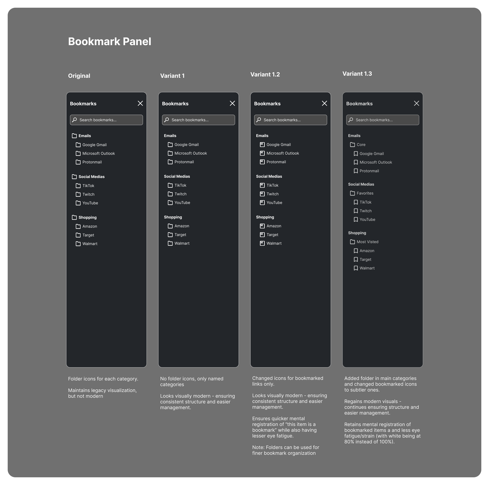

Product Design
Bookmark Side Panel — Improving Structure, Hierarchy, and Scan Speed
A focused high-fidelity iteration exploring how a bookmark panel can feel calmer and easier to manage through clearer grouping, softer visual emphasis, and stronger “at-a-glance” recognition — without changing the feature set.

01 — Context
Bookmark panels are high-frequency UI surfaces where small inefficiencies compound over time.
Poor structure slows scanning, increases visual noise, and discourages users from maintaining organization.
This project focuses on improving usability without disrupting existing user habits.
How do we preserve familiarity while improving structure, scanning speed, and long-session comfort?
02 — Objectives
- Improve category recognition and scan speed
- Reduce visual noise without sacrificing clarity
- Preserve existing user mental models
- Improve long-session visual comfort
- Support scalable organization (e.g., folders, grouping)
03 — Exploration
The panel was iterated through multiple high-fidelity variants to test the balance between clarity and simplicity.
Key iterations:
- Original: fStrong structure with heavy icon usage; clear but visually dense
- Variant 1: Removed category icons to reduce noise and modernize layout
- Variant 1.2: dIntroduced differentiation between categories and bookmarks to improve recognition
- Variant 1.3 (Final): Reintroduced category folders, reduced icon weight, and added subfolders (Core, Favorites, Most Visited)
Each iteration focused on improving scan efficiency while maintaining structural clarity.
04 — Key Decisions
- Hierarchy:Categories remain primary; links remain secondary
- Recognition:Icons support differentiation without dominating visual space
- Visual Comfort:Reduced contrast to minimize eye fatigue during repeated use
- Scalability:Folder structure supports deeper organization without requiring redesign
05 — Outcome
The final design improves scan speed and readability while maintaining user familiarity.
Users can:
- Quickly identify categories and associated links
- Navigate large bookmark sets without visual overload
- Maintain their existing organizational mental model
The panel supports both immediate usability improvements and future expansion.
06 — Next Steps
- Introduce “active / recent” indicators without disrupting user-defined structure
- Add optional collapse/expand behavior for large lists
- Explore lightweight interaction controls (hover actions for open, edit, remove)
UI/UX structure exploration only. Engineering implementation and data behavior were not included.